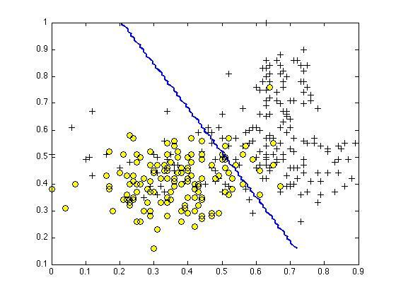
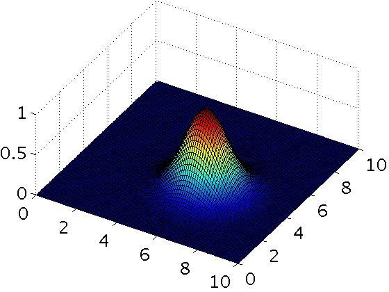
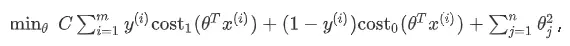

第 56 题
假设您使用训练了一个高斯内核的支持向量机，它在训练集上学习了以下决策边界：

你觉得支持向量机欠拟合了，你应该试着增加或减少C吗？或者增加或减少σ²？查看答案与解析
答案 D
C 越大，训练误分的相对代价越高；σ² 越小，高斯核对局部距离越敏感，边界可更灵活。题目给定欠拟合，D 同时沿这两个方向试调。A 反向，B、C 各只调对一个方向。
SVM 既追求分对两类，也尽量让边界离最近的点远一点。
两条直线都能分开两组样本，一条紧贴某个点，另一条离两边最近的点都较远。下次测量稍有抖动时，哪条边界更稳？
接上之前学过的决策边界。
把绿线左右移动，先找出最宽的绿色带，再加入越界点。看看能否通过小幅移动同时保持分类与间隔。
图中只比较竖直边界。原始数据里，带边上的最近点决定可留出的间隔。
原始图中左右最近点的横坐标为 −1 和 1。边界放在中点时，两边各留 1 个单位。达到最宽安全带时，贴着带边的样本是这组硬间隔演示中的支持向量。
把得分归一到边界 z=0、间隔边 z=±1。真实正类若得分 0.4，分类虽对，间隔损失仍是 1−0.4=0.6。软间隔允许样本落入带内或分错，C 越大越重视减少这类损失。
把 σ² 从 1 改到 0.25。猜红点更像还是更不像参考点，再看圆形边界往里还是往外移。
示意分类器把核相似度至少 0.5 的点判为正类，所以一颗参考点就能围出圆形边界。
高斯核衡量样本离参考点有多近，同一点的相似度为 1。σ² 小时相似度下降较快。使用多个参考点的核相似度，分类边界可以弯曲；用距离前应注意特征尺度。
高斯核 SVM 欠拟合时，可在验证集试更大的 C 或更小的 σ²。K 个类别做一对其余，需要训练 K 个分类器。
一个实际负类的得分是 z=−0.4。它分对了吗？间隔损失是多少？
得分为负，判为负类，因此分类正确。损失为 max(0, 1−0.4)=0.6。
在规范化约束下，z=±1 两条平行线之间的几何宽度为 2/‖w‖。硬间隔最大化这段宽度。软间隔允许违反约束，通过 C 权衡违规损失与参数惩罚。核方法可把分类得分写成若干个核相似度的加权和加上偏置。
先独立作答，再展开解析核对。计算题可以在纸上列式。
假设您使用训练了一个高斯内核的支持向量机，它在训练集上学习了以下决策边界：

你觉得支持向量机欠拟合了，你应该试着增加或减少C吗？或者增加或减少σ²？答案 D
C 越大，训练误分的相对代价越高；σ² 越小，高斯核对局部距离越敏感，边界可更灵活。题目给定欠拟合，D 同时沿这两个方向试调。A 反向，B、C 各只调对一个方向。
高斯核给出的相似度为 similarity(x, ℓ⁽¹⁾) = exp(−‖x−ℓ⁽¹⁾‖²/(2σ²))。下图画出了 σ²=1 时的相似度。

当 σ²=0.25 时，哪张图表示新的相似度曲面？答案 D
高斯核的中心 x=ℓ 处分子为 0，峰值始终是 e⁰=1。其他位置，σ² 从 1 减到 0.25 后指数的负值更大，离中心相同距离处相似度更低，峰变窄且中心不动，因此 D。
题册勘误 原旁注说高度下降。中心高度保持 1，变化的是宽度。
支持向量机求解

其中函数cost0(z)和cost1(z)图像如下： 目标中的第一项是：C∑ᵢ₌₁ᵐ [y⁽ⁱ⁾·cost₁(θᵀx⁽ⁱ⁾) + (1−y⁽ⁱ⁾)·cost₀(θᵀx⁽ⁱ⁾)]. 如果以下四个条件中有两个为真，则第一项为零。使这个项等于零的两个条件是什么？
目标中的第一项是：C∑ᵢ₌₁ᵐ [y⁽ⁱ⁾·cost₁(θᵀx⁽ⁱ⁾) + (1−y⁽ⁱ⁾)·cost₀(θᵀx⁽ⁱ⁾)]. 如果以下四个条件中有两个为真，则第一项为零。使这个项等于零的两个条件是什么？
答案 A、B
对正样本，相应损失是 max(0, 1−z)，在 z≥1 时为 0；对负样本是 max(0, 1+z)，在 z≤−1 时为 0。A、B 保证各项都为零。C、D 只保证站到正确一边，仍可能处在间隔内。
假设您有一个具有n=10个特征和m=5000个示例的数据集。在用梯度下降训练逻辑回归分类器之后，您发现它与训练集欠拟合，并且在训练集或交叉验证集上没有达到所需的性能。以下哪个步骤有望改善？选出所有正确项
答案 A、D
题目已给欠拟合，A 的更有表达能力的模型或 D 的多项式特征有望改善。B 减少样本通常无益；C 中逻辑回归的标准目标是凸的，理由不成立。
以下哪项陈述是正确的？选出所有正确项
答案 C、D
在 x=ℓ 时指数为 0，高斯核最大值为 1，因此 C 正确。D 是因为距离会受量纲影响。A 的一对其余需要 K 个二分类器。B 的软间隔参数 C 即使在线性可分时也可能影响最终解。
正类到 +1、负类到 −1 时对应损失归零。高斯核中心高度为 1，σ² 影响宽窄。
一条逻辑回归边界的阈值为 0.5，其线性得分为多少？
得分为 0。SVM 也可用得分 0 来判定边界，再进一步区分离边界有多远。